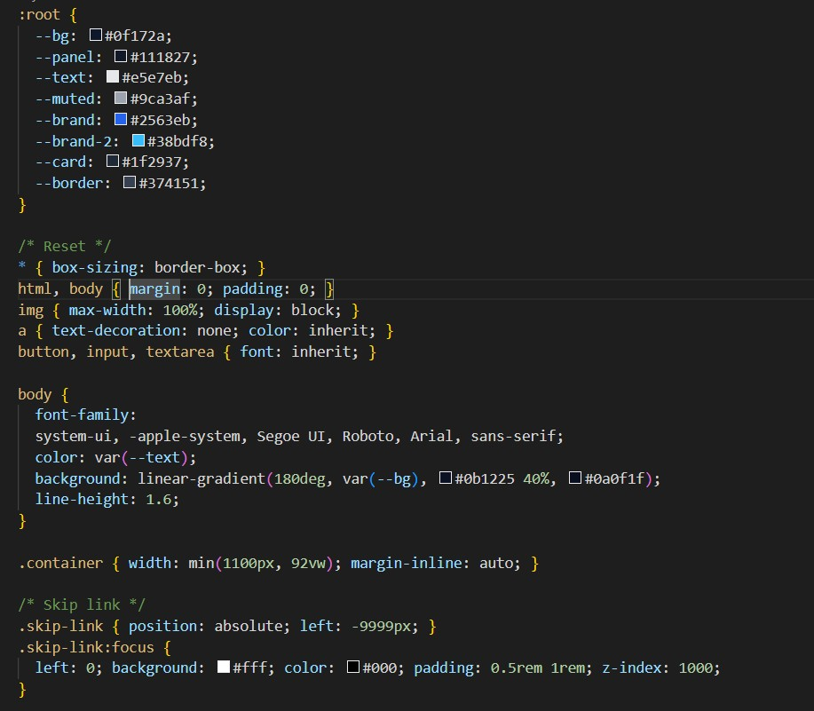
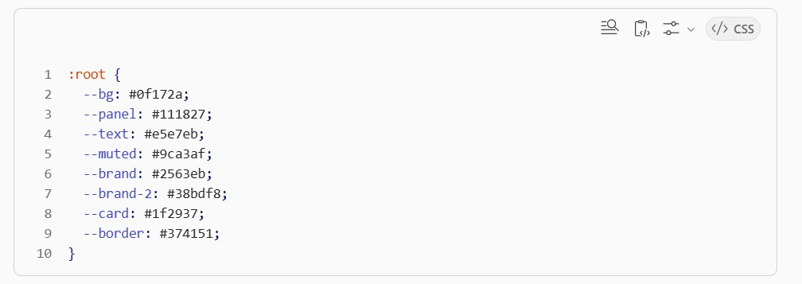
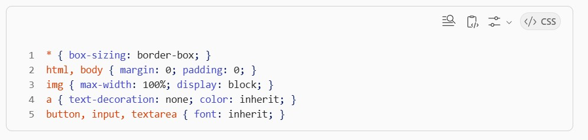
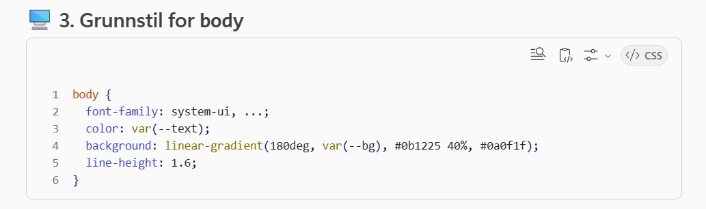
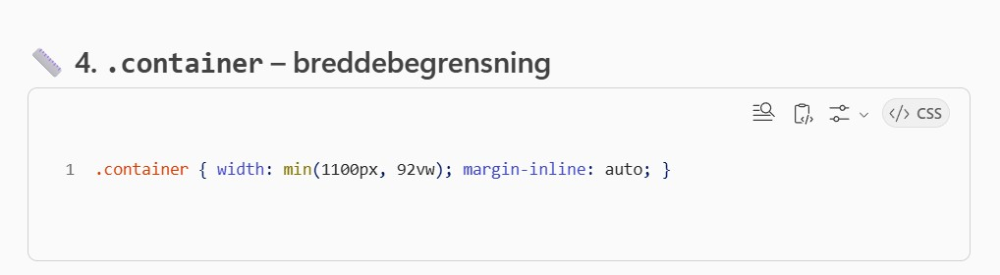
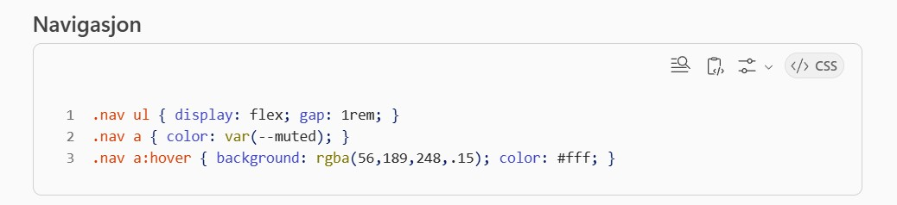
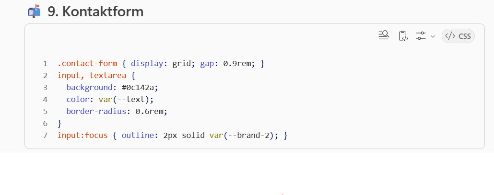
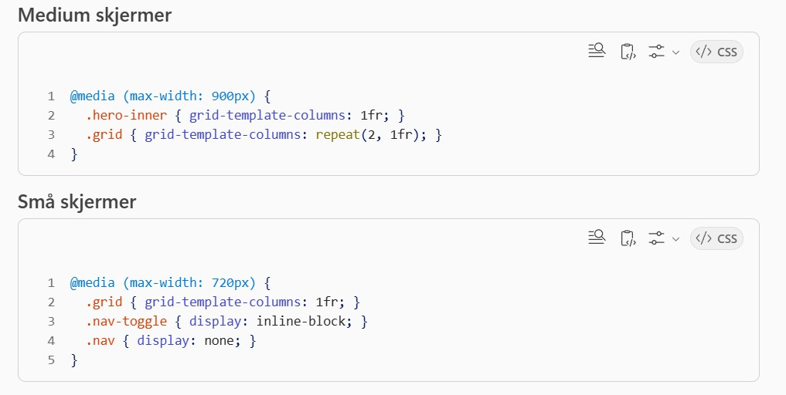

📘Hva er CSS‑koden?
Denne CSS‑filen styrer utseende, layout og design for hele nettsiden.
...
Frontend grunnlag: HTML, CSS og JavaScript. Bygg moderne nettsider.


Denne CSS‑filen styrer utseende, layout og design for hele nettsiden.
...

Her defineres globale fargevariabler.
...

Denne delen nullstiller nettleserens standardstiler. ...

Dette setter: ...

Denne sørger for at innholdet: ...

Dette gir bedre tilgjengelighet: ...

Effekt: ...

Navigasjon: ...

Gir: ...


Hero‑seksjonen:Gir god luft rundt hero‑seksjonen. ...

Når skjermen er liten: ...

Dette gir: ...


Gir tre responsive kolonner. ...

Kontaktform: ...

Footer skiller seg tydelig fra hovedinnholdet med: ...

Dette gjør at layouten fungerer på: ...